Wellington, Aotearoa New Zealand
Our Teaching
Whānau
A diverse community of teachers, practitioners, and guides who speak to the body, heart and mind.
We are intentional about delivering authentic, connecting and impactful classes and you can expect a world-class Yoga, Pilates and educational experience here at AWHI! We take pride in the continued training and development of our team both on and off the mat so that our community feels held, challenged and nurtured as we grow together and support each other in our humanness.
Yoga Instructors

Kathleen Kuehn
she/her
Co-owner & Chief Enabling Officer
E-RYT 500 Vinyasa · 100+ Yin YTT · Pilates · Hot HIIT Pilates
Former academic with a PhD in Media & Communications, now responsible for making things happen! Alignment-based and purposeful in her teaching, with an approachable humour focused on self-inquiry and personal growth. Known for her sharp wit and playful approach — because growth doesn't always have to be serious.

Tom Brotherstone
he/him
Co-owner & Staff Manager
E-RYT 500 · Black belt Brazilian Jiu Jitsu
Teaching Yin and Vinyasa for over a decade, Tom trained in Rishikesh, India and his focus is on building community through practice — providing supportive platforms for growth and self-discovery. His easeful, approachable style puts students immediately at ease, and his classes weave yoga philosophy throughout, grounding movement in meaning.
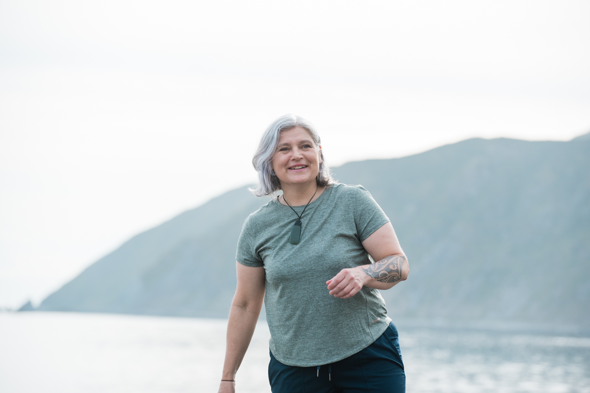
Hana Buchanan
Yoga Instructor
200hr Vinyasa YTT · 100hr Yin YTT · Meditation teacher training (in progress)
Hana (Taranaki iwi, Te Ātiawa, Taranaki Whānui ki te Upoko o te Ika) brings 25+ years of yoga and pū āio practice, with a deep emphasis on mātauranga Māori and the synergies between yoga and Māori ways of knowing and being.
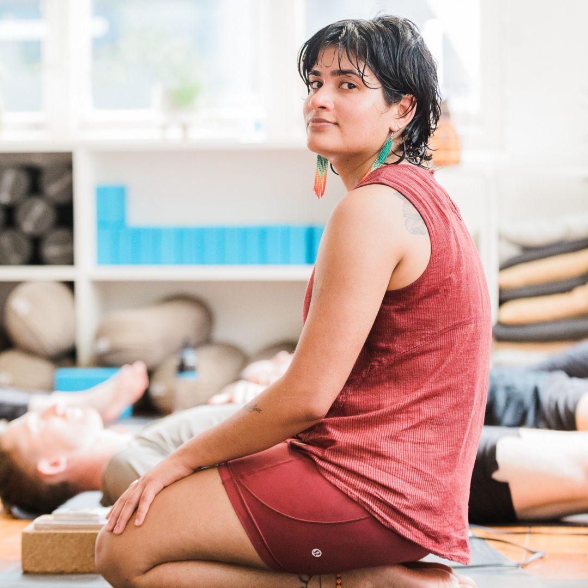
Satvika Iyer
they/them
Yoga Instructor
200hr Vinyasa YTT · 400hr Hatha YTT · 100hr Yin YTT · 50hr Kundalini · 100hr Aerial Yoga
Raised across India, Tāmaki Makaurau, and Canada, Satvika brings a deep reverence for Indian heritage and yogic philosophy. Their teaching emphasises breath-led movement and inner wisdom.
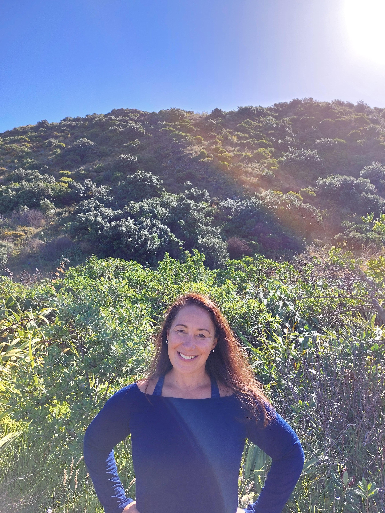
Lisa Baker
she/her
Yoga Instructor
200hr YTT · 50hr Yin · Meditation, Pranayama & Yoga Nidra YTT · 2nd dan Kyokushin karate
A primary and ECE teacher, now lecturing in the tertiary sector. A trauma survivor whose healing journey led to discovering yoga's union of mind, body, and wairua — and to sharing that with others.
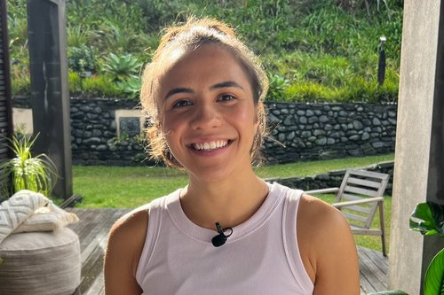
Martine Matapo
she/her
Yoga Instructor
200hr Vinyasa YTT
PhD candidate researching physical activity and public health — specifically Cook Islands women's movement experiences. Her warm teaching style emphasises accessibility and grounding for all bodies.
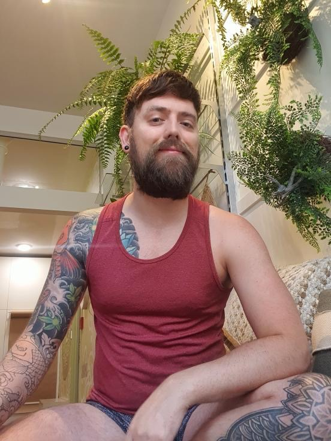
James Mason-Redpath
they/them · he/him
Yoga Instructor
Classical Hatha YTT · Yin Yoga · Hatha in Ghosh tradition
First came to yoga through car accident rehabilitation in 2002. James brings a functional, no-fuss approach that emphasises simplicity and real-world movement. Interests include pole dancing, burlesque, and outdoor exploration.

Marcelly Ribeiro
she/her · they/them
Yoga Instructor
200hr Vinyasa YTT · 200hr Hatha YTT
From Brazil, Marcelly combines pregnancy yoga, personal training, and birth education. She has a degree in Physical Education, and holds Childbirth & Doula and Active Birth Centre certificates. Her alignment-based practice blends asana and pranayama for functionality, stress relief, and full-body awareness.
Rosie Sievers
Yoga Instructor
200hr Vinyasa YTT · Yin yoga · Trauma-informed yoga · Embryology
Yoga teacher, Craniosacral therapist, and group facilitator. Rosie weaves life experience with a deep reverence for the body, and is passionate about creating space for the release of stored trauma.
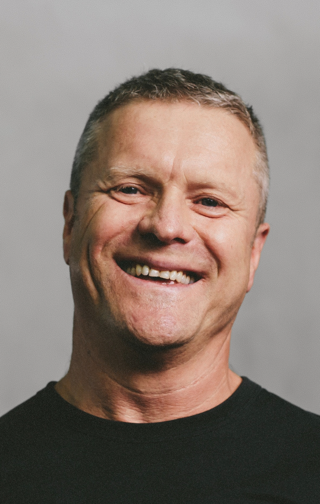
Russell Millar
Yoga Instructor
RYT 500 · CE Certified
Over 20 years of personal practice. Registered with Yoga Alliance, Russell sees teaching as personal dharma — empowering students to become their own guides rather than relying on external authority.
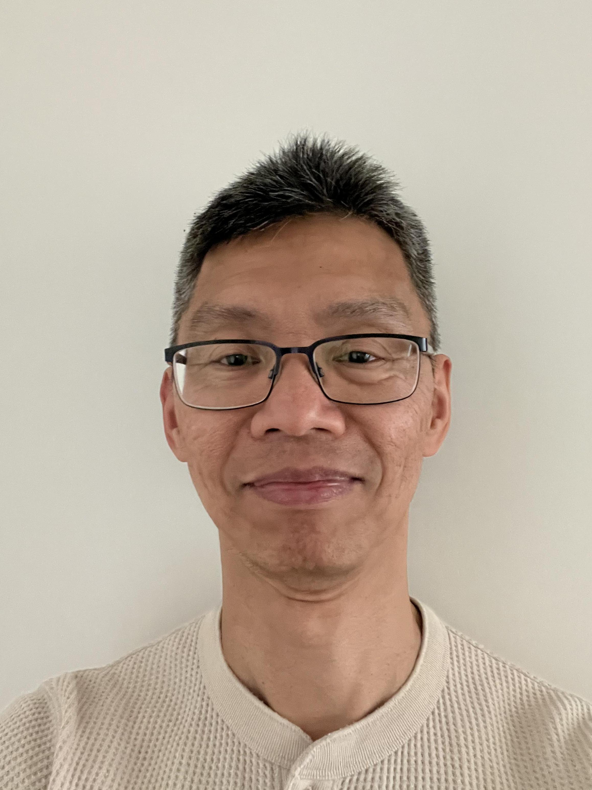
Jen Choong
he/him
200hr CYT
Teaching since 2017 · Practising since the late 1990s
Originally from Singapore, Jen brings a playfulness and humour to his teaching shaped by fitness, martial arts, and multiple yoga traditions. Over two decades of practice make for a deeply considered class.
Nat Woodhall
Yoga Instructor
200hr YTT · Classical ballet instructor (20+ years)
A regular Ashtanga practitioner with deep roots in classical ballet, Nat's teaching emphasises accessibility, anatomical understanding, and thoughtful sequencing as tools for personal inquiry.
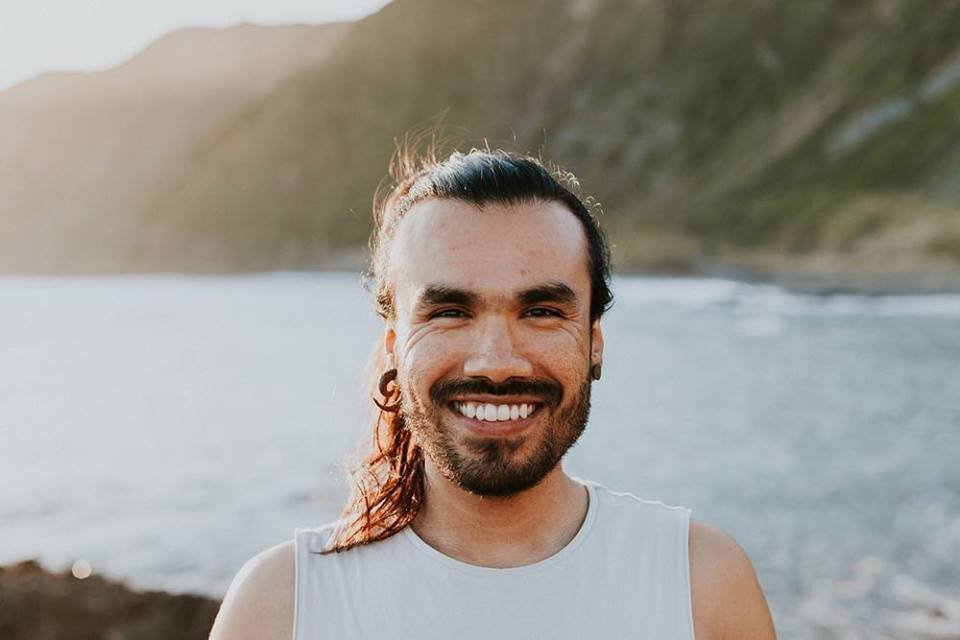
Claudio Escutia
Yoga Instructor & Sound Practitioner
300hr YTT (Sivananda Vedanta Ashram) · Sound Healing (Nepal) · Classical music · Ashtanga Vinyasa (Berlin)
From Mexico City, raised in a professional musician family, Claudio has lived across the world before arriving in Aotearoa in 2017. His practice explores harmonisation through sound — Tibetan bowls, mantras, and mudras.
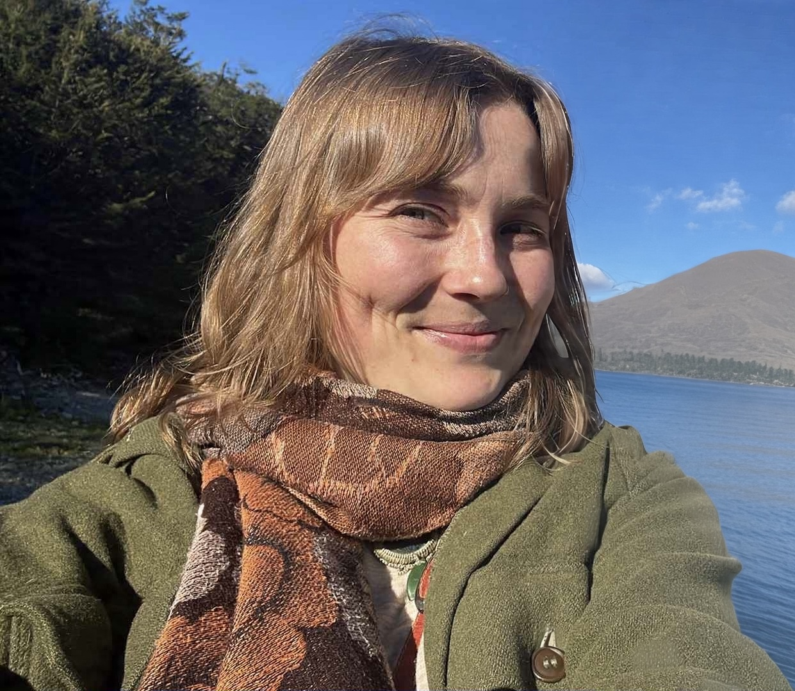
Flora Burrell Ellery
Yoga Instructor
200hr Vinyasa YTT
Raised between Abel Tasman, the Cook Islands, and the Bay of Plenty. A student midwife who has used yoga as a healing tool since childhood, Flora brings deep reverence for the mind-body connection.
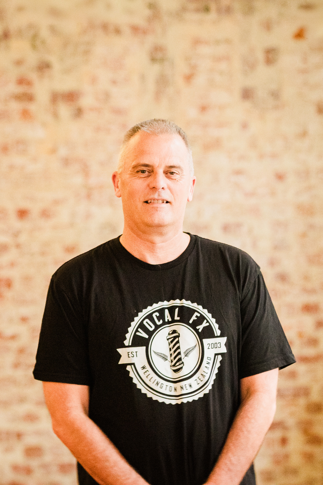
Glenn Dunbier
Yoga Instructor
100hr Yin YTT
Retired after a 38-year government career in 2023. Practicing Yin yoga since 2018, Glenn now volunteers in free community classes — bringing consistency, calm, and a genuine belief in yoga's accessibility.
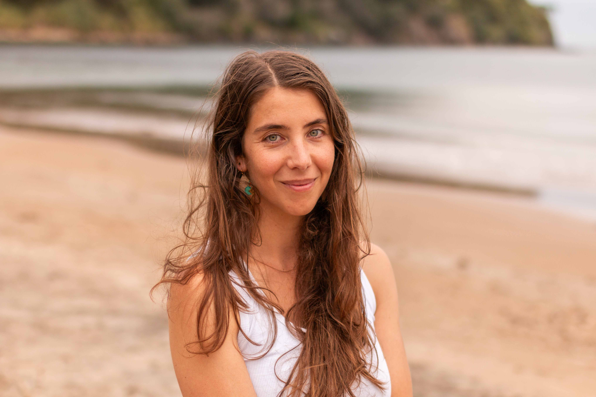
Jenny Oliver
Yoga Instructor
200hr YTT
Focused on foundations and the connections between mind, body, and yoga philosophy. Jenny aims to create classes where students leave feeling stable, spacious, and a little more at home in themselves.

Mark Pascall
he/him
Co-owner & Business Development
Former technology professional with eight years in cryptocurrency and blockchain. Now focused on purpose-driven organisational structures. Runs The Wellbeing Protocol and is a father of four.

Veena
she/her
Yoga Instructor
200hr Vinyasa YTT · 100hr Yin YTT
Veena went to her first yoga class at 13 and never really left. For her it's about paying attention, noticing what feels good, and having the agency to choose differently — on and off the mat. Warm and down-to-earth, with clear guidance and plenty of options.
Pilates Instructors
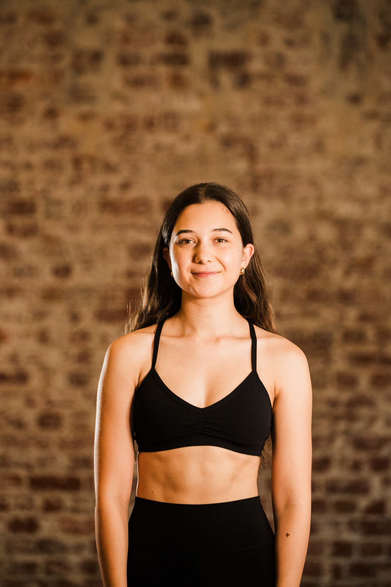
Maddie Boyes
she/her
Pilates Instructor
Level 1 Pilates — SUNA Pilates (2024)
Fell in love with Pilates right here at AWHI. A primary school teacher by trade, Maddie brings that same warm, patient energy to class — creating a welcoming space for every body and every level.
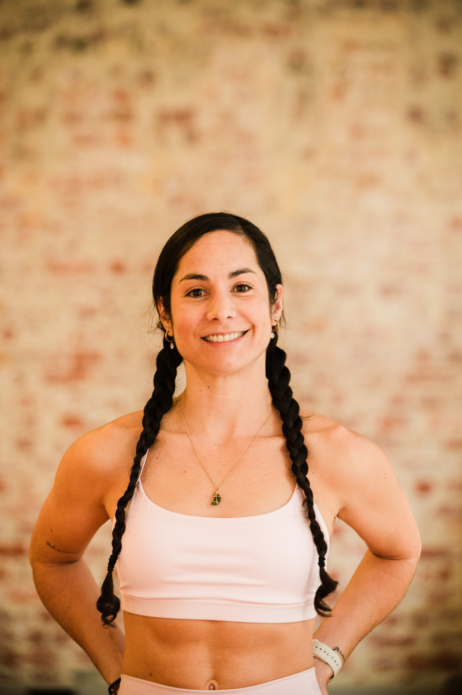
Luisa Gordillo
Pilates Instructor
Certified Pilates instructor · Health & Wellbeing background
Specialising in body awareness, injury prevention, and mindful movement. Luisa creates full-body workouts that meet students where they are — with a focus on long-term health and sustainable practice.
Teaching Whānau
A wider circle of teachers and collaborators who contribute to the AWHI community.
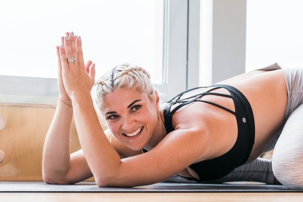
Shirley McLeod
she/her
Yoga
200hr YTT · iRest Yoga Nidra Level 1 · Mindfulness Based Stillness Meditation · RYT-500 (in progress)
Self-published creator of a Yoga Deck (41 instructional cards) and co-creator of Te Reo Yoga Cards. An independent project manager and mother of two who started yoga on holiday in 2013 and never looked back.
Maya Castrejon
she/her
Pilates
Pilates Teacher Training Certificate (Kāpiti) · Teaching since 2020
Originally from California, Maya arrived in Aotearoa in 2015 and has been an AWHI student since 2018. Her classes emphasise whole-body connection and core awareness, with a welcoming approach for all levels.
Charlotte Cook
she/her
Yoga
200hr YTT (AWHI)
Broadcast journalist by trade, Charlotte connects through stories of strength and self-discovery. Her teaching style is fun, a little daring, and rooted in the belief that everyone has something to learn about themselves on the mat.
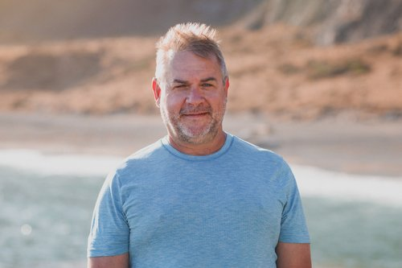
Mark Russell
he/him
Yoga
600+ hours yoga teacher training · 300hr Trauma-Informed Movement Facilitator · Yin teacher training assistant
Nearly 20 years of personal practice — initially for flexibility, now with a strong focus on trauma-informed yoga and brave, inclusive spaces. Mark works to make every student feel genuinely seen.
Come and practice with us
See a name you'd like to practice with? Browse the timetable and book a class with your teacher.